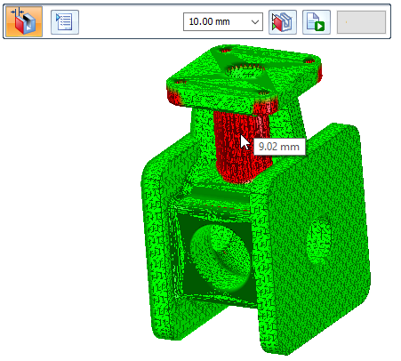
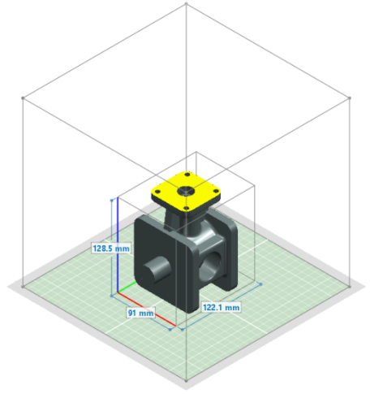

Wall Thickness command
Use the 3D Print tab→Validate group→Wall Thickness command to identify areas (faces) of a 3D model where the wall thickness is insufficient for 3D printing. Wall thickness is defined as the minimum thickness your model should have at any time. For example, you can use this command to validate the wall thicknesses of an imported mesh model, or to determine whether parts created with web networks meet the requirements for polymer plastic molds.
Use the Wall Thickness command bar to perform the analysis based on the Minimum Thickness value required by the 3D printer. When you click the Calculate button, the analysis returns a highlighted color display of all faces that have less than the minimum thickness (default color=red). All faces having more than the minimum thickness display as green (default color).

Wall thickness calculation
The wall thickness is always calculated parallel to the print bed. By default, the print bed is in the X-Y plane. Therefore thickness is calculated in the X and Y direction.
Any walls having lesser thickness in the Z-direction are not considered as not meeting the minimum thickness value.
The File menu→3D Print page shows the model document on the X-Y plane of the printer bed, where X (red axis), Y (green axis), and Z (blue axis).

How do I
Print directly to a 3D printerOpen a Solid Edge file in 3D Builder
Scale a model for 3D printing
Save a 3D print file to disk
Create a 3D Print material
Validate a 3D print model
Check wall thickness for 3D print
Learn more
Printing solid modelsUsing the 3D Print page
Look up more details
Selecting a file format for additive manufacturingOverhang command
Overhang command bar
Print Material command
Print Validations command
Print Validations dialog box
Wall Thickness command bar
Physical Thread command
Physical Thread command bar
Reorient command
Reorient command bar
Quick links
Working with .stl documents in Solid EdgeExport Options for STL (.stl) dialog box
Export Options for 3MF dialog box
Related Topics
Delete Voids commandDelete Voids command bar